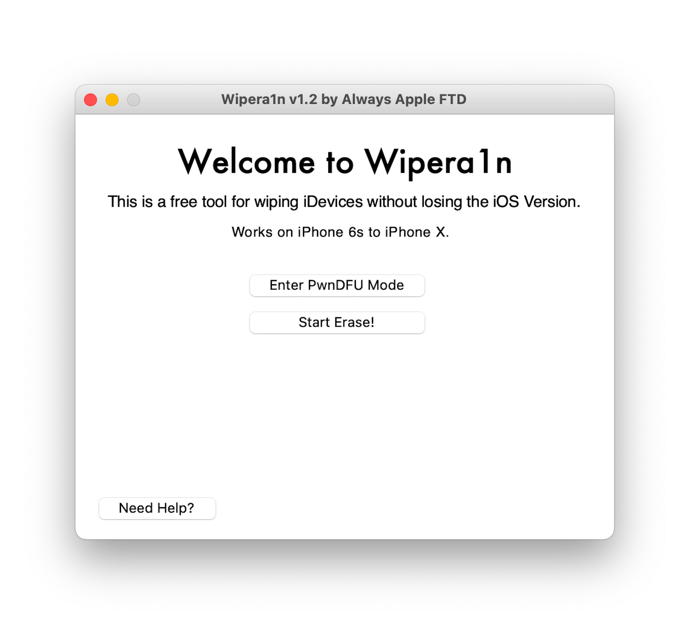

<!-- <!DOCTYPE html>
<html>
<head>
  <meta charset="UTF-8">
  <title>Always Apple FTD - Wipera1n</title>
  <link rel="stylesheet" type="text/css" href="style.css">
  <style>
    /* CSS for the Wipera1n page */

    body {
      text-align: center;
      height: 100vh;
    }

    img {
      display: block;
      margin: 0 auto;
    }

    h1 {
     text-align: center;
     font-family: PT Sans Caption;
}
    h2 {
     text-align: center;
     font-family: PT Sans Caption;
     font-size: 10;
}
    h3 {
     text-align: center;
     font-family: PT Sans Caption;
     font-size: 10;
}
    h4 {
     text-align: center;
     font-size: 10;
}
    p {
     text-align: center;
}

    .spacer {
      height: 50px;
    }

    .spacer p {
      font-size: 14px; /* Adjust the font size as needed */
    }

    .button {
      display: inline-block;
      padding: 10px 40px;
      background-color: #2a96fa;
      color: white;
      text-decoration: none;
      border-radius: 8px;
      font-size: 16px;
      border: none;
      transition: background-color 0.3s ease;
    }

    .button:hover {
      background-color: #0d69bf; /* Updated hover color */
    }
    .button2 {
      display: inline-block;
      padding: 10px 40px;
      background-color: #e3653b;
      color: white;
      text-decoration: none;
      border-radius: 8px;
      font-size: 16px;
      border: none;
      transition: background-color 0.3s ease;
    }

    .button2:hover {
      background-color: #a33612; /* Updated hover color */
    }
  </style>
</head>
<body>
  
  <div class="navbar">
    <button class="tablinks" onclick="navigateToPage('index.html')">Home</button>
    <button class="tablinks" onclick="navigateToPage('news.html')">News</button>
    <button class="tablinks" onclick="navigateToPage('web_blog.html')">Web Blog</button>
    <button class="tablinks" onclick="navigateToPage('helpful_hacks.html')">Helpful Hacks</button>
    <button class="tablinks" onclick="navigateToPage('downloads.html')">Downloads</button>
    <button class="tablinks" onclick="navigateToPage('about.html')">About</button>
  </div>

  <script>
  function navigateToPage(pageUrl) {
    window.location = pageUrl;
  }
  </script>

    <div id="wipera1n_page">
    <h1>Presenting, Wipera1n!</h1>
    <h2>A free tool for wiping iOS devices without losing the iOS version.</h2>
    
    <h2>Supported devices</h2>
    <h4>iPhone 6s</h4>
    <h4>iPhone SE (1st generation)</h4>
    <h4>iPhone 7</h4>
    <h4>iPhone 7 Plus</h4>
    <h4>iPhone 8</h4>
    <h4>iPhone 8 Plus</h4>
    <h4>iPhone X</h4>
    <h4>iPad Pro 12.9-inch (2015)</h4>
    <h4>iPad Pro 9.7-inch (2016)</h4>
    <h4>iPad Pro 10.5-inch 1st generation</h4>
    <h4>iPod touch 7th generation</h4>
    <h4>iPad 5th generation</h4>
    <h4>iPad 6th generation</h4>
    <h4>iPad 7th generation</h4>
    <h2>How to download Wipera1n</h2>
    <h4>Open the link below to download the latest version.</h4>
    <h4>Once you open the site, click on the blue download button to download.</h4>
    <a href="https://www.mediafire.com/file/tp73ia32nhdvpzl/Wipera1n_v1.2_%255BRELEASE%255D.zip/file" class="button">Download v1.2</a>
    <h2>How to use Wipera1n</h2>
    <h4>[1] Open up a new Terminal window. Terminal can be found inside the "Other" folder in your Launchpad</h4>
    <h4>[2] Type "cd" without the quotes, all lowercase. </h4>
    <h4>Then drag and drop the Wipera1n_v1.2_[RELEASE] folder you downloaded from the Download button above.</h4>
    <h4>Then press enter.</h4>
    <h4>[3] Type "./Wipera1n" without the quotes, and and with the capital W.</h4>
    <h4>Wait a few seconds and the app should open up!</h4>
    <h4>Note: In step 3, you can also just type "./Wi" without the quotes and with a capital W, then press the tab key on your keyboard to fill in the whole filename. </h4>
    <h4>This is just a shortcut to make it quicker.</h4>
    <h4>Hope you enjoy the software!</h4>
    <h2>Need help?</h2>
    <h3>I'm here to help if you need it.</h3>
    <h3>I try my best to make Wipera1n user-friendly and fix any bugs </p>
    <p>but feel free to report any problems to me.</p>
    <a href="mailto:alwaysappleftd@icloud.com?subject=Issue%20with%20Wipera1n" class="button2">Contact Always Apple FTD</a>
   
    <div class="spacer"></div>
  </div>
    <p>Website made by Always Apple FTD. Please do not copy any part of this website.</p>
</body>
</html>
-->
